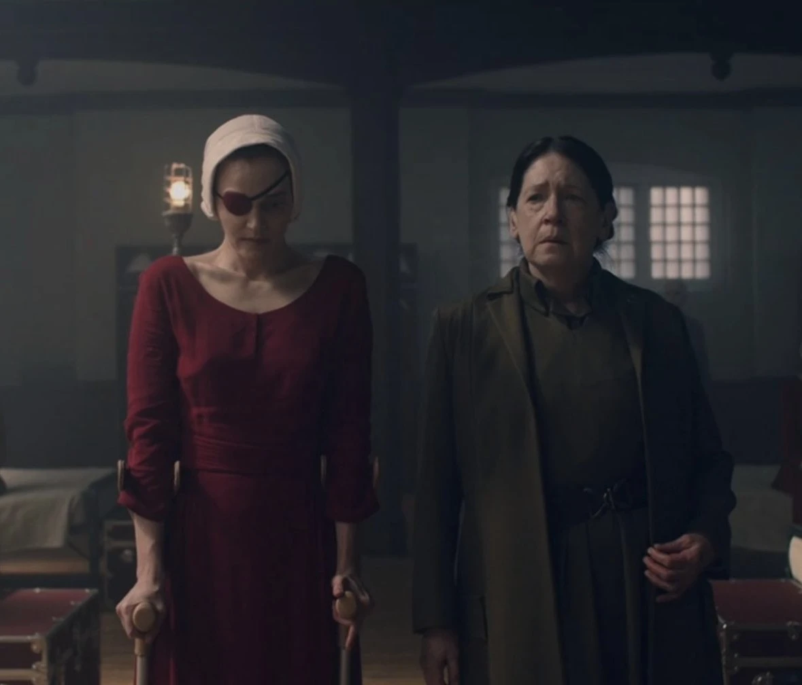
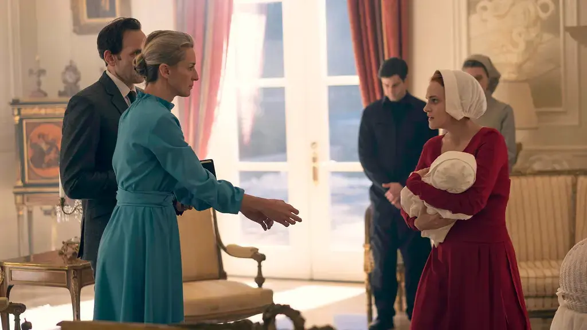
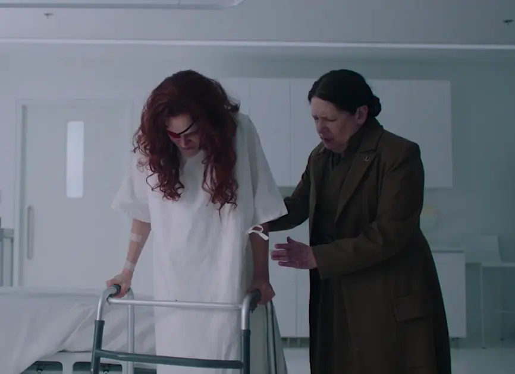

Resistencia Y Aliados
Janine Lindo
Janine - Dewarren - Dedaniel - Dehoward
Inocencia, trauma y supervivencia
Janine Lindo fue conocida en Gilead como Dewarren, Dedaniel, Dehoward, Dejoseph y Depaul. Es interpretada por Madeline Brewer.
Su aparente docilidad convive con las profundas secuelas de la violencia ejercida sobre ella.
Antecedentes y Centro Rojo
Antes de Gilead, Janine trabajaba como camarera y era madre de Caleb, quien murió en un accidente de tránsito después del golpe sin que ella llegara a saberlo.
En el Centro Rojo, junto a June, Moira y Alma, fue castigada por insubordinación con la extirpación quirúrgica de su ojo derecho.

También fue obligada a asumir la culpa por una violación sufrida antes del régimen. Su conducta infantil, dócil y a veces temperamental funciona como respuesta al trauma. En June encuentra uno de sus vínculos más constantes.
Asignaciones y maternidad

Hogar de los Putnam
Como Dewarren fue asignada al comandante Warren Putnam y a Naomi. Allí dio a luz a Angela, también llamada Charlotte, y creyó que Putnam estaba enamorado de ella.
Después del deterioro de su situación fue enviada a las Colonias, aunque más tarde regresó.

Lydia y el reencuentro
Janine mantiene con Lydia una relación compleja y casi maternal. Después de nuevas asignaciones y castigos, Lydia y Naomi Lawrence intervienen para liberarla y reunirla con Angela.
Momentos decisivos
Hitos de la supervivencia de Janine
-
01
Castigo en el Centro Rojo
La mutilación y la reeducación marcan el comienzo de su cautiverio.
-
02
Nacimiento de Angela
Da a luz en el hogar Putnam y queda unida a una hija que el régimen le arrebata.
-
03
Liberación y reencuentro
Recupera la libertad y vuelve a reunirse con Angela al final de su recorrido.